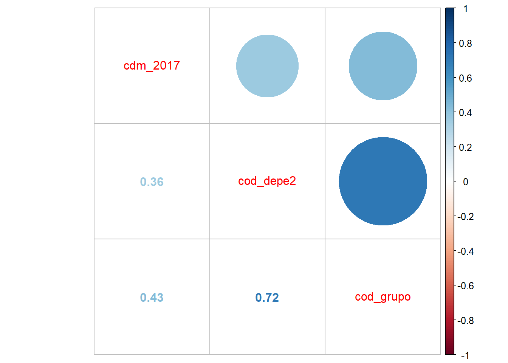

Mercantilización del sistema educativo y segregación escolar en Chile
Introducción
(Trabajo 01)
Cómo se mencionó en la primera entrega1, la mercantilización del sistema educativo en el país comienza con las reformas neoliberales implementadas en dictadura, las cuales debilitaron el sistema educativo estatal promoviendo los fines de lucro y la competencia individual, a pesar de nuevas reformas, estas no han generado cambios sustanciales en las politicas educativas las cuales han llevado a una extrema privatización de la educación, la cual ha fomentado la segregación y desigualdad de oportunidades educativas en Chile.
La segregación escolar se refiere a la distribución desigual de los estudiantes en las escuelas según sus características socioeconómicas o culturales. En Chile, la segregación se evidencia tanto en la facultad que tienen los establecimientos para seleccionar estudiantes como en la libertad de elección de los padres, libertad teórica, ya que en la práctica, esta elección puede estar limitada por factores socioeconómicos y culturales, lo que lleva a la concentración de ciertos grupos en determinadas escuelas.
Las brechas educativas han aumentado debido a la naturaleza del sistema educacional actual, el cual reproduce las desigualdades preexistentes en el país. La idea principal de esta investigación se centra en cómo las prácticas de privatización han fomentado la segregación escolar, tomando los datos disponibles que entrega la Agencia de la Calidad de la Educación de la prueba SIMCE 2017 2° medio , seleccionando las variables que podrían reflejar mejor este fenómeno.
Análisis descriptivo
(Trabajo 02)
SIMCE es una evaluación cuyo objetivo es conocer los resultados educativos de los establecimientos, evaluando el logro de los contenidos y habilidades del Currículum Nacional, recogiendo información sobre el contexto educativo a través de cuestionarios que responden directores(as), docentes, estudiantes, padres, madres y apoderados, de modo de analizar los resultados en forma integral.
La segunda entrega de este curso2 contó con la generación de una nueva base de datos a partir de las bases originales del proceso SIMCE 2017 para los cursos de 2° medio a nivel país, junto a la selección, procesamiento y analisis descriptivo de las variables relevantes para el informe, las cuales son:
VARIABLE 2: “cod_grupo” = Código de grupo socioeconómico (Bajo(1);Medio bajo(2);Medio(3);Medio alto(4);Alto(5))
VARIABLE 3: “cdm_2017” = Categoría de Desempeño 2017 (INSUFICIENTE(1), MEDIO-BAJO(2), MEDIO(3) Y ALTO(4))
Se destacó que la mayoría de los establecimientos tienen un desempeño académico medio, seguido por un desempeño medio-bajo. En cuanto al tipo de establecimiento una gran mayoria son del tipo municipal subvencionado. En relación con el GSE más del 50% de establecimientos se encuentran entre el Medio y el Bajo. Se incluyen gráficos que muestran la distribución de las categorías de desempeño y del tipo de establecimiento. En el primer gráfico se observa una distribución desigual entre las categorías, destacando el desempeño medio como el más común. En el segundo gráfico, se destaca la minoría de colegios particulares pagados en comparación con los subvencionados.
pacman::p_load(dplyr, sjmisc, car, sjlabelled, stargazer, haven, kableExtra, sjPlot, summarytools, ggplot2)rm(list=ls()) options(scipen=999) load("~/Universidad/UAH 5° Semestre/OFC R para análisis estadístico/Trabajos/input/data-proc/simce2m2017_final.RData")#| label: fig-cdm_2017#| fig-cap: “Categorías de Desempeño”graph1 <- simce2m2017_final %>%ggplot(aes(x = cdm_2017)) +geom_bar(fill ="coral")+labs(title ="Categoría de Desempeño 2017",x ="Categoría de Desempeño",y ="Frecuencia") +theme_bw()graph1
Para el trabajo 02 se realizó la preparación de los datos y se generaron 2 bases (la 1ra incluye los casos NA y la 2da no) simce2m2017_total.RData y simce2m2017_final.Rdata
Para ver si podemos hacer el análisis con casos completos revisamos que los NA no sean más del 10%
Ya que sólo el 3.859527% del total son casos perdidos no supone problemas trabajar con la base simce2m2017_final.RData
PD: La preparación y tratamiento de los casos perdidos con “listwise deletion” se encuentra en entre las líneas 203 - 215 y 260 - 276 del Script “Procesamiento(2)” del Trabajo 2
pacman::p_load(dplyr, sjmisc, sjPlot, sjlabelled, kableExtra, GGally, corrplot, tidyverse, car, haven, summarytools, psych)rm(list=ls()) options(scipen=999)#Carga de la base de datosload("~/Universidad/UAH 5° Semestre/OFC R para análisis estadístico/Trabajos/input/data-proc/simce2m2017_total.RData")load("~/Universidad/UAH 5° Semestre/OFC R para análisis estadístico/Trabajos/input/data-proc/simce2m2017_final.RData")dim(simce2m2017_total)
[1] 2876 3
dim(simce2m2017_final)
[1] 2765 3
2876-2765
[1] 111
111/2876*100
[1] 3.859527
load("~/Universidad/UAH 5° Semestre/OFC R para análisis estadístico/Trabajos/input/data-proc/simce2m2017_final.RData")dim(simce2m2017_final)
simce2m2017_finalnum <- simce2m2017_finalsave(simce2m2017_finalnum,file ="C:/Users/nachi/OneDrive/Documentos/Universidad/UAH 5° Semestre/OFC R para análisis estadístico/Trabajos/input/data-proc/simce2m2017_finalnum.RData")load("~/Universidad/UAH 5° Semestre/OFC R para análisis estadístico/Trabajos/input/data-proc/simce2m2017_finalnum.RData")dim(simce2m2017_finalnum)
save(simce2m2017_finalnum,file ="C:/Users/nachi/OneDrive/Documentos/Universidad/UAH 5° Semestre/OFC R para análisis estadístico/Trabajos/input/data-proc/simce2m2017_finalnum.RData")load("~/Universidad/UAH 5° Semestre/OFC R para análisis estadístico/Trabajos/input/data-proc/simce2m2017_finalnum.RData")frq(simce2m2017_finalnum)
Computed correlation used pearson-method with listwise-deletion.
corrplot.mixed(M)

Correlación Variables Simce 2017
Al revisar la matriz de correlación y visualizar la ?@cor-complete, nos indica que la variable cdm_2017 tiene una correlación de 0.361 con la variable cod_depe2 lo que sugiere una relación positiva/ moderada entre el desempeño escolar y el tipo de dependencia de la institución educativa, lo mismo sucede con la categoría de desempeño (cdm_2017) y el cod_grupo (GSE) con una correlación de 0.432, por ultimo para las variables cod_depe2 y cod_grupo, la correlación es de 0.718, lo que sugiere una relación positiva fuerte entre el tipo de dependencia de la institución educativa y en que GSE se posiciona, esto podría sugerir que establecimientos con estudiantes de ciertos GSE tienden a tener un mejor desempeño en las pruebas SIMCE.
Parte 2.1 Construcción de Escalas - Reporte de Consistencia Interna: Alfa de Chronbach
#Construcción de Escalasload("~/Universidad/UAH 5° Semestre/OFC R para análisis estadístico/Trabajos/input/data-proc/simce2m2017_finalnum.RData")frq(simce2m2017_finalnum)
#Utilizaremos las mismas variables, sumado a que la base "simce2m2017_finalnum" ya se encuentra sin casos NA#Estimar consistencia interna: Alfa de Chronbachpsych::alpha(dplyr::select(simce2m2017_finalnum, cdm_2017, cod_depe2, cod_grupo))
Reliability analysis
Call: psych::alpha(x = dplyr::select(simce2m2017_finalnum, cdm_2017,
cod_depe2, cod_grupo))
raw_alpha std.alpha G6(smc) average_r S/N ase mean sd median_r
0.71 0.75 0.71 0.5 3 0.0081 1.4 0.77 0.43
95% confidence boundaries
lower alpha upper
Feldt 0.69 0.71 0.73
Duhachek 0.69 0.71 0.72
Reliability if an item is dropped:
raw_alpha std.alpha G6(smc) average_r S/N alpha se var.r med.r
cdm_2017 0.72 0.84 0.72 0.72 5.1 0.007 NA 0.72
cod_depe2 0.57 0.60 0.43 0.43 1.5 0.015 NA 0.43
cod_grupo 0.51 0.53 0.36 0.36 1.1 0.018 NA 0.36
Item statistics
n raw.r std.r r.cor r.drop mean sd
cdm_2017 2765 0.72 0.73 0.48 0.44 1.67 0.88
cod_depe2 2765 0.81 0.85 0.77 0.67 0.86 0.62
cod_grupo 2765 0.92 0.88 0.82 0.66 1.68 1.30
Non missing response frequency for each item
0 1 2 3 4 miss
cdm_2017 0.12 0.24 0.48 0.16 0.00 0
cod_depe2 0.27 0.59 0.13 0.00 0.00 0
cod_grupo 0.21 0.29 0.24 0.13 0.13 0
Esto nos indica una consistencia interna de 0.71, es decir que la fiabilidad de la escala total tiene un buen panorama general, si bien no es el mejor, es mayor a 0.6 así que podemos trabajar con este valor, también se puede ver que si se elimina algún item, alfa aumenta el mínimo (0,01) para “cdm_2017”, pero disminuye para los otros dos, lo que sugiere que pueden estar menos relacionados con la escala
Min. 1st Qu. Median Mean 3rd Qu. Max.
0.000 2.000 4.000 4.214 6.000 9.000
save(simce2m2017_finalnum2,file ="C:/Users/nachi/OneDrive/Documentos/Universidad/UAH 5° Semestre/OFC R para análisis estadístico/Trabajos/input/data-proc/simce2m2017_finalnum2.RData")
Al observar la Figure 1 que busca representar la distribución de la segregación escolar en Chile, se observa que la mayoría de los estudiantes se encuentran en niveles moderados de segregación, con una concentración significativa en torno a la mediana de 4.214, sin embargo, existe una distribución sesgada hacia los niveles más bajos concentrando la mayor cantidad de estudiantes bajo la media, al contrastar con la bibliografía referenciada en las entregas anteriores, y considerando la falta de información estadística para construir índices o escalas sobre segregación escolar, hacen que esta no sea consistente con los múltiples estudios concluyen que Chile es un país altamente segregado, ni sea fiel a los datos de otras áreas de investigación, por lo que como objetivo está el construir conocimiento sobre la segregación escolar en el sistema educacional chileno